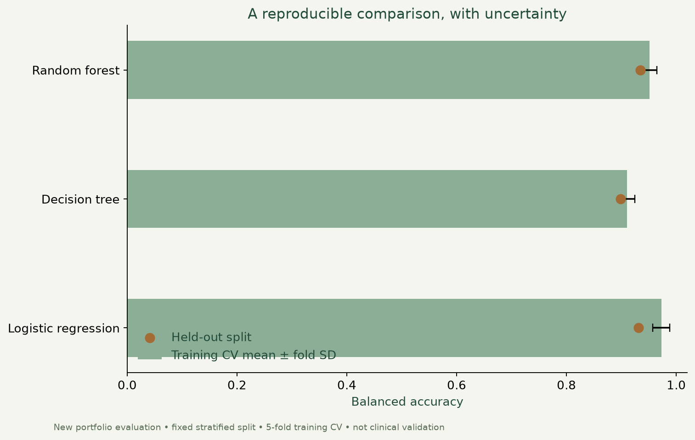

Breast cancer classification.
Explore a public dataset, compare classifiers and examine the limits of model evaluation.

What I built
Investigated the Wisconsin Breast Cancer dataset in a Python notebook, using exploration, feature selection and several classification methods.
Why it matters
A useful model starts with understanding the data and evaluating it carefully. This investigation shows the steps between a dataset and an interpretable comparison.
How it works
- 01
Explore class balance, feature relationships and correlations.
- 02
Split the data, scale training features and transform the held-out features.
- 03
Compare logistic regression, decision trees, random forests and additional classifiers, then discuss limitations.
What it demonstrates
Exploratory analysis, supervised learning, preprocessing, classifier comparison and critical interpretation of results.
Evidence, with context.
The corrected notebook executed all 42 code cells. Test scaling now uses training-set parameters, while cross-validation performs scaling inside each fold.


Scope and limitations
Educational machine-learning investigation. No clinical use, independent validation or diagnostic capability is claimed. Feature selection remains exploratory; results on this single dataset do not establish real-world performance.
Visual provenance and source attribution are recorded in the evidence register ↗.
Under the surface.
Architecture, methods and improvements
Corrected Data/data.csv capitalization and removed deprecated np.bool usage. Added deterministic seeds to tree estimators, corrected test-set scaling and moved cross-validation preprocessing into pipelines. Regenerated notebook outputs are distinguished from historical narrative results. A separate evaluate.py now retains all 30 features and uses a fixed stratified split, training-only cross-validation and recorded false-negative counts. This is a new refinement, distinct from the historical notebook. Reusing one holdout across model comparisons does not provide an unbiased model-selection estimate.
Try it locally
Install requirements.txt and open PFDA Project 2.ipynb from the repository root in Jupyter. Run all cells in order.
The portfolio is a static GitHub Pages site. Server applications run locally; the portfolio does not collect bookings, credentials or payments.